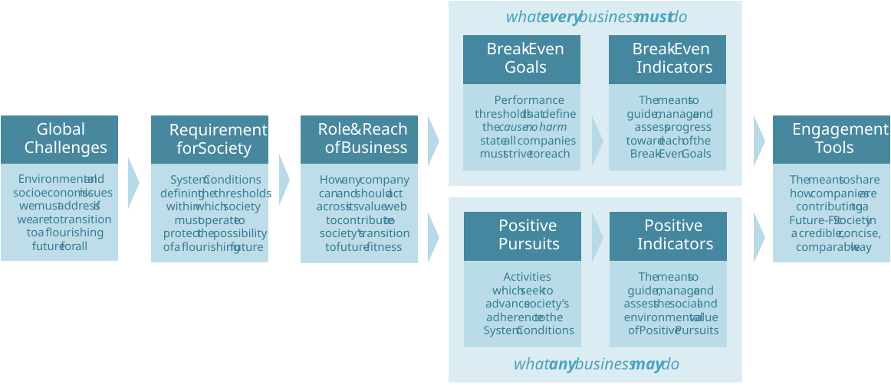
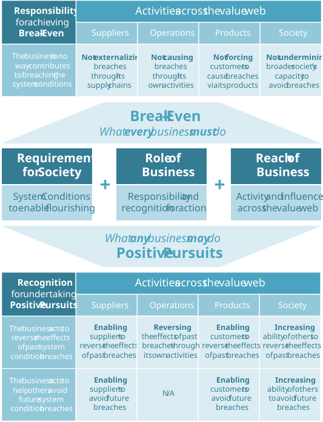
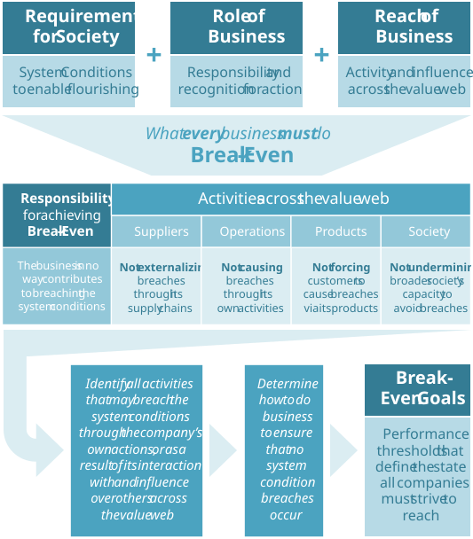
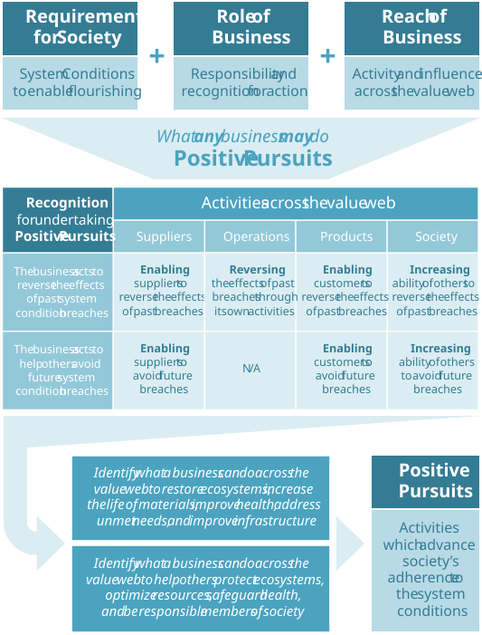

5. Umsetzbare Leitlinien für Unternehmen
Peter Drucker
5.1 Auf dem Weg zu einem zukunftsfähigen Unternehmen
Was sollten Unternehmen tun?
Viele Arten von Unternehmen – um nur einige Beispiele zu nennen: Filmstudios, Modehäuser und Eisverkäufer – versuchen nicht, die größten Herausforderungen der Gesellschaft zu lösen. Das macht sie nicht ‘schlecht’ oder unvereinbar mit einer zukunftsfähigen Gesellschaft: Viele würden sagen, das Leben wäre langweilig ohne großartige Filme, schöne Kleidung und gelegentliche Leckereien.
Andere Unternehmen haben Geschäftsmodelle, die offensichtlicher auf die Erfüllung gesellschaftlicher Bedürfnisse ausgerichtet sind – etwa Lebensmittel- oder Pharmahersteller –, aber das bedeutet nicht, dass sie von Natur aus „gut“ sind. Selbst wenn ihre Produkte nützlich sind, greifen solche Unternehmen möglicherweise auf viele Aktivitäten zurück, die systemische Probleme verschärfen.
Aus systemischer Sicht kommt es darauf an, dass jedes Unternehmen nichts unternimmt, um den Wandel der Gesellschaft zu untergraben:
Ein zukunftsfähiges Unternehmen untergräbt in keiner Weise – und erhöht im Idealfall – die Möglichkeit, dass Menschen und anderes Leben auf der Erde für immer gedeihen.
Entwicklung umsetzbarer Leitlinien.
Wie im vorherigen Kapitel besprochen, geht es darum, eine Reihe von ökologischen und sozialen Schwellenwerten zu erreichen, die den außerfinanziellen Break-Even-Punkt für die Wertschöpfung entlang der Triple Bottom Line bilden. In diesem Kapitel ermitteln wir genau, wie dies im geschäftlichen Kontext aussieht.
Jedes Tool muss sowohl nützlich als auch nutzbar sein, und der Future-Fit Business Benchmark bildet da keine Ausnahme. Um die Anforderungen an die Gesellschaft in umsetzbare Leitlinien für Unternehmen umzusetzen, mussten zwei Fragen beantwortet werden:
Die Voraussetzung für das Geschäft: Was brauchen Unternehmensführer und Investoren, um sie für die Herausforderung zu rüsten?
Die Rolle und Reichweite des Unternehmens: Was kann – und was muss – jedes Unternehmen innerhalb und außerhalb seines Wertschöpfungsnetzes tun, um seinen Teil zur Verwirklichung einer zukunftsfähigen Gesellschaft beizutragen?
Jeder dieser Bereiche wird nun angesprochen.
5.2 Die Geschäftsvoraussetzung
Theoretisch könnte jedes Unternehmen die eingeführten Anforderungen an eine Future-Fit Society erfüllen über und daraus abzuleiten, wie sich das Unternehmen ändern muss. In der Praxis werden wahrscheinlich nur die fortschrittlichsten Unternehmen den nötigen Aufwand investieren, um herauszufinden, wie das geht. Darüber hinaus besteht die Möglichkeit, dass zwei beliebige Unternehmen – selbst innerhalb derselben Branche – ihre Ambitionen völlig unterschiedlich formulieren und ihre Fortschritte bewerten würden, wenn sie sich selbst überlassen würden.
Das ist nicht ideal: Wir haben ein gemeinsames Ziel vor Augen – eine zukunftsfähige Gesellschaft – warum also nicht auch Verpflichtungen und Fortschritte auf die gleiche Weise verfolgen? Tatsächlich gibt es dafür vier gute Gründe:
Gruppenzwang treibt den Fortschritt voran.
Während sich jedes Unternehmen auf das Ziel konzentrieren sollte, werden Unternehmen immer versuchen zu verstehen, was ihre Konkurrenten tun – und könnten dadurch dazu angespornt werden, ihr eigenes Spiel zu verbessern. Wenn jeder den Fortschritt auf die gleiche Weise betrachtet, ist es für ein Unternehmen einfacher zu verfolgen, wie es im Vergleich zu seinen Mitbewerbern bei der Verfolgung der richtigen Endziele abschneidet.
Investoren möchten herausfinden, wer die wahren Führungskräfte sind.
Die mangelnde Vergleichbarkeit der Umwelt- und Sozialziele von Unternehmen macht es selbst für den sorgfältigsten Investor schwierig festzustellen, welche Unternehmen sich am meisten auf systemische Risiken vorbereiten und neue Wachstumschancen eröffnen. Ein prägnanter, vergleichbarer und aggregierbarer Satz von Kennzahlen, die kurzfristige Maßnahmen in den Kontext sinnvoller langfristiger Ambitionen einordnen, würde dieses Problem lösen.
Zusammenarbeit erfordert eine gemeinsame Vision und gemeinsame Ziele.
Effektive Partnerschaften sind von entscheidender Bedeutung, wenn ein Unternehmen – und erst recht die Gesellschaft als Ganzes – zukunftsfit werden soll. Ein konsistenter Satz von Zielen kann allen Organisationen in einem Value Web dabei helfen, herauszufinden, wie sie zusammenarbeiten können, um ihre gegenseitige Zukunftsfähigkeit zu verbessern.
Um unvorhergesehene Kompromisse zu vermeiden, ist ein ganzheitlicher Ansatz erforderlich.
Wie beschrieben in die Rolle jedes sozialen Systems Es gibt viele Möglichkeiten, wie ein Unternehmen einen positiven Einfluss haben kann, und solche Bemühungen sollten gefördert werden. Allerdings kann kein Versuch, „Gutes zu tun“, das Fehlen notwendiger Fortschritte an anderer Stelle rechtfertigen, da sich positive und negative Auswirkungen fast nie aufheben. 5 Ein einheitlicher Rahmen, der alle möglichen positiven und negativen Beiträge zu einer zukunftsfähigen Gesellschaft umfasst, kann dazu beitragen, dass auch das fokussierteste Unternehmen den Blick für das große Ganze nicht verliert.
Welche positiven Auswirkungen ein Unternehmen auch immer hat, es muss zukunftsfähig werden, bevor es mit der Gewissheit behaupten kann, dass es einen Systemwert schafft.
Wir statten Unternehmensleiter und Investoren mit dem aus, was sie brauchen.
Die oben genannten Überlegungen prägten die entscheidende Phase der Benchmark-Entwicklung: die Umsetzung der bisher vorgestellten Konzepte in eine Reihe von Break-Even-Zielen, positiven Zielen und ergänzenden Leistungsindikatoren (siehe Abbildung 5.1).
Im nächsten Abschnitt wird die verwendete Entwicklungsmethodik beschrieben.
Abbildung 5.1: Die Anatomie des Future-Fit Business Benchmark.

5.3 Die Rolle und Reichweite von Unternehmen
Was jeder Geschäft muss tun und was beliebig Geschäft Mai Tun.
Die FSSD-Systembedingungen eingeführt über bieten eine solide, wissenschaftlich fundierte Grundlage, um zu ermitteln, was jedes Unternehmen tun muss und was jedes Unternehmen darüber hinaus tun kann.
Ein Unternehmen wird den außerfinanziellen Break-Even nur dann erreichen und damit zukunftsfähig werden, wenn seine Existenz in keiner Weise zu Verstößen gegen die Systembedingungen innerhalb und außerhalb der eigenen vier Wände beiträgt.
Darüber hinaus – und noch bevor es selbst zukunftsfähig wird – kann ein Unternehmen positive Ergebnisse anstreben, die den Fortschritt der Gesellschaft in Richtung Zukunftsfähigkeit vorantreiben, indem es Maßnahmen zur Überwindung vergangener Systemverstöße ergreift oder indem es anderen hilft, künftige Verstöße zu vermeiden.
Der Umfang des geschäftlichen Einflusses.
Um zu verstehen, was es für ein Unternehmen bedeutet, nicht zu Verstößen gegen die Systembedingungen beizutragen, müssen wir uns über das Ausmaß des Potenzials eines Unternehmens, andere zu beeinträchtigen, im Klaren sein.
Jedes Unternehmen ist nur ein Akteur in einem komplexen und dynamischen Wertenetz, das eine Vielzahl anderer sozialer Systeme beeinflusst und von diesen beeinflusst wird. Wir können das Wertschöpfungsnetz in vier Bereiche unterteilen:
- Lieferanten: Dies umfasst alle, die an der Produktion der Inputs beteiligt sind, auf die das Unternehmen angewiesen ist, und alle, die von diesen Aktivitäten betroffen sind – einschließlich Arbeiter und Gemeinschaften in der gesamten Lieferkette des Unternehmens.
- Operationen: Die Aktivitäten des Unternehmens selbst, einschließlich der Gemeinden und Arbeiter, die es unterstützen.
- Produkte: Die von einem Unternehmen angebotenen umsatzgenerierenden Waren und Dienstleistungen sowie die Einzelpersonen, Unternehmen oder anderen Akteure, die davon profitieren oder davon betroffen sind.
- Gesellschaft: Andere Organisationen, physische Infrastruktur und gemeinsame gesellschaftliche Institutionen, auf die das Unternehmen Einfluss nehmen kann und/oder von denen es beeinflusst werden kann.
Diese Wertwebsegmentierung dient als Grundlage für die Bestimmung zweier Dinge. Erstens, inwieweit ein Unternehmen für Verstöße gegen die Systembedingungen verantwortlich gemacht werden sollte. Zweitens, inwieweit ein Unternehmen versuchen kann, eine positive Wirkung zu erzielen – und dafür anerkannt zu werden –, indem es die Auswirkungen früherer Verstöße rückgängig macht oder anderen dabei hilft, künftige Verstöße zu vermeiden.
Diese beiden komplementären Aspekte des Strebens nach Zukunftsfähigkeit – die Verantwortung für die Beseitigung negativer Auswirkungen und die Anerkennung positiver Auswirkungen – sind in zusammengefasst Abbildung 5.2 und werden im Folgenden ausführlich beschrieben.
Abbildung 5.2: Abbildung der gesellschaftlichen Anforderungen auf die Rolle und Reichweite der Unternehmen, um zu ermitteln, was Unternehmen im Hinblick auf die Systembedingungen tun können und müssen.

Unternehmerische Verantwortung für negative Auswirkungen im gesamten Wertschöpfungsnetz
Nur wenige würden der Vorstellung widersprechen, dass ein Unternehmen für die Auswirkungen verantwortlich und vollumfänglich verantwortlich ist, die unter seiner direkten Kontrolle liegen, beispielsweise im Zusammenhang mit seinen täglichen Abläufen und der Gestaltung seiner Produkte. Aus systemischer Sicht ist ein Unternehmen jedoch auch gegenseitig für bestimmte Auswirkungen verantwortlich, die außerhalb seiner direkten Kontrolle liegen:
Ein Unternehmen ist gegenseitig für alle Auswirkungen verantwortlich, die über seine eigenen vier Wände hinausgehen, sofern diese Auswirkungen eine Folge der Existenz des Unternehmens sind.
Um den Break-Even-Punkt zu ermitteln, den jedes Unternehmen erreichen muss, muss diese Definition der gegenseitigen Verantwortung auf alle vier Bereiche des Wertschöpfungsnetzes angewendet werden.
Break-Even gegenüber Lieferanten.
Kein Unternehmen kann zukunftsfit sein, wenn sein Erfolg auf der Verwendung von Inputs beruht, die selbst zu Systemverstößen führen. Bei der gegenseitigen Verantwortung geht es also darum, Verstöße nicht in die Lieferketten des Unternehmens zu externalisieren. Die genauen Anforderungen variieren wie folgt:
Ausgelagerte Kernfunktionen: Wenn ein Unternehmen Aktivitäten auslagert, die es ansonsten selbst durchführen müsste (z. B. Kundenbetreuung, Fertigung, Logistik), lagert es auch alle mit dieser Aktivität verbundenen negativen Auswirkungen aus. Daher ist ein Unternehmen gegenseitig dafür verantwortlich, alle Systemverstöße zu vermeiden oder zu beheben, die durch die Bereitstellung seiner ausgelagerten Funktionen verursacht werden.
Produktinputs: Kein Unternehmen kann physische Güter herstellen – oder Dienstleistungen anbieten, deren Erbringung den Verbrauch solcher Güter beinhaltet –, ohne sich auf Rohstoffe, hergestellte Teile usw. zu verlassen. Daher erfordert die gegenseitige Verantwortung, dass ein Unternehmen daran arbeitet, alle von der Wiege bis zur Produktion betroffenen Güter zu vermeiden oder anzugehen. Torstöße, die durch die Bereitstellung seiner verursacht werden Produkteingaben.
Nebenprodukte und -ausgaben: Dies umfasst drei Arten von Einkäufen. Erstens Dienstleistungen, die ein Unternehmen von Zeit zu Zeit in Anspruch nimmt (z. B. Beratung, Taxis, Flüge und Hotels für Geschäftsreisen). Zweitens allgemeine Güter, die im Rahmen des täglichen Betriebs verbraucht werden (z. B. Büromaterial, Reinigungsprodukte). Drittens: gekaufte oder geleaste Kapitalanlagen, die alltägliche Aktivitäten unterstützen (z. B. Gebäude, IT-Ausrüstung, Maschinen, Möbel). Ein Unternehmen kann solche Inputs im Allgemeinen auf vergleichbarer Basis von einer Reihe von Lieferanten beziehen, sein Einfluss auf einen von ihnen ist jedoch wahrscheinlich vernachlässigbar. In diesem Fall erstreckt sich die gegenseitige Verantwortung auf die Auswahl der besten verfügbaren Option.
Die heutigen globalen Lieferketten können sehr komplex und undurchsichtig sein. Die Rückverfolgbarkeit geschäftlicher Inputs – und ihrer daraus resultierenden Auswirkungen – ist daher eine große Herausforderung. Allerdings ist Unwissenheit kein Schutz und es liegt in der alleinigen Verantwortung eines Unternehmens, im Rahmen seiner Beschaffungspraktiken alles in seiner Macht Stehende zu tun, um Hotspots in der Lieferkette kontinuierlich zu antizipieren, zu vermeiden und anzugehen, bis die oben genannten Anforderungen erfüllt sind.
Break-Even im Verhältnis zum operativen Geschäft.
Ein Unternehmen trägt die volle Verantwortung für die Beseitigung negativer ökologischer und sozialer Auswirkungen, die durch seine eigenen Aktivitäten verursacht werden, und das gilt auch für die Handlungen seiner Mitarbeiter. Es ist nicht möglich, die Handlungen einzelner Mitarbeiter vollständig zu kontrollieren, aber ein Unternehmen muss alles in seiner Macht Stehende tun, um Probleme vorherzusehen und zu vermeiden und alle auftretenden Probleme effektiv anzugehen.
Break-Even bezogen auf Produkte.
Ein Unternehmen muss alles tun, um sicherzustellen, dass die von ihm angebotenen Waren und Dienstleistungen weder Mensch noch Umwelt schädigen, es kann jedoch nicht erwartet werden, dass es die vollständige Kontrolle über das Handeln seiner Kunden ausübt. Daher wird davon ausgegangen, dass ein Unternehmen gegenseitig für unvermeidbare oder wahrscheinliche und vorhersehbare Auswirkungen verantwortlich ist, die sich aus der Nutzung und (im Falle physischer Güter) der Nachnutzung seiner Produkte ergeben.
Wenn ein Unternehmen beispielsweise ein Auto mit Verbrennungsmotor verkauft, ist das Unternehmen – weil der Fahrer keine Wahl hat – gegenseitig für die Treibhausgase verantwortlich, die das Auto während der Nutzung ausstößt. Wenn ein Unternehmen ein Elektroauto verkauft, steht es dem Fahrer frei, zum Laden der Batterie erneuerbaren Strom zu nutzen. In diesem Fall haftet das Unternehmen nicht gegenseitig für Treibhausgasemissionen, die (bei der Stromerzeugung) entstehen, wenn der Kunde eine CO2-emittierende Stromquelle nutzt.
Break-Even im Verhältnis zur Gesellschaft.
Ein Unternehmen muss sich ethisch verhalten und darf die Integrität der gesellschaftlichen Institutionen und der physischen Infrastruktur, auf die wir alle angewiesen sind, weder durch Handeln (z. B. durch Lobbyarbeit gegen fortschrittliche Gesetze) noch durch Untätigkeit (z. B. durch die Nichtzahlung ausreichender Steuern) untergraben.
Ein Unternehmen ist auch gegenseitig für die Auswirkungen seiner finanziellen Vermögenswerte verantwortlich. Jede Organisation ist in ihren Handlungen durch den Zugang zu Kapital eingeschränkt, und Unternehmen haben die Macht, diesen Zugang in Form von Investitionen oder Krediten bereitzustellen. Die Wirtschaft muss alles tun, um sicherzustellen, dass sie keine Aktivitäten finanziell unterstützt, deren Erfolg von Verstößen gegen die Systembedingungen abhängt (z. B. Bereitstellung von Projektfinanzierungen für den Bau von Kohlekraftwerken).
Unternehmensanerkennung für positive Auswirkungen im gesamten Wertschöpfungsnetz
Denken Sie daran, dass ein Unternehmen positive Ergebnisse erzielen kann, indem es entweder Maßnahmen zur Überwindung vergangener Verstöße gegen die Systembedingungen ergreift oder indem es anderen dabei hilft, künftige Verstöße zu vermeiden. Auch hier betrachten wir nacheinander alle vier Bereiche des Wertschöpfungsnetzes.
Positives Streben nach Lieferanten.
Wie oben erläutert, kann ein Unternehmen in Bezug auf seine Lieferanten erst dann als zukunftsfit gelten, wenn es alle negativen Auswirkungen, die innerhalb seiner Lieferketten auftreten, wirksam vermieden oder angegangen hat.
Das Erreichen dieses Leistungsniveaus – insbesondere bei Produkteingaben mit komplexen, vielschichtigen Lieferketten – kann erheblichen Zeit- und Arbeitsaufwand erfordern.
Es besteht jedoch ein großer Unterschied zwischen dem Warten auf eine Verbesserung der Lieferkette und dem aktiven Eingreifen, um sie zu verbessern. Daher stellt jede Maßnahme, die ein Unternehmen ergreift, um es einem Lieferanten zu ermöglichen, die Gewinnschwelle zu erreichen, ein positives Streben dar.
Beispielsweise kann ein Unternehmen, das landwirtschaftliche Betriebsmittel aus einer wasserarmen Region bezieht, finanzielle Unterstützung und/oder Fachwissen anbieten, um Lieferanten bei der Installation von Tropfbewässerungstechnologie zu unterstützen und so den Wasser-Fußabdruck des Betriebsmittels radikal zu reduzieren.
Ein Unternehmen kann auch positive Ergebnisse erzielen, indem es Lieferanten hilft, frühere Umweltauswirkungen umzukehren (z. B. durch die Wiederherstellung zuvor abgeholzter Wälder) oder die wirtschaftlichen Chancen für unterversorgte Gruppen erhöht (z. B. indem es Kleinbauern in abgelegenen Gebieten Zugang zu Rohstoffmärkten ermöglicht).
Positive Ziele in Bezug auf den Betrieb.
Ein Unternehmen hat die vollständige Kontrolle über seine eigenen operativen Aktivitäten, daher zählt die schrittweise Reduzierung seiner eigenen negativen Auswirkungen bis zur Gewinnschwelle nicht als positives Streben.
Allerdings kann ein Unternehmen durch seine eigenen Aktivitäten positive Ergebnisse erzielen, wenn es über die Gewinnschwelle hinausgeht und beginnt, Umweltauswirkungen umzukehren (z. B. indem es mehr erneuerbare Energie erzeugt, als es benötigt, und den Überschuss wieder ins Netz einspeist) oder wenn dies der Fall ist steigert die soziale Integration, indem es aktiv versucht, Menschen aus unterversorgten Gruppen zu beschäftigen.
Positives Streben nach Produkten.
Ein Unternehmen kann ein positives Ergebnis erzielen, indem es seinen Kunden ermöglicht, ihre eigenen negativen Auswirkungen zu beseitigen (z. B. indem sie ihren Bedarf an fossilen Brennstoffen oder Frischwasser erheblich reduzieren) – oder sogar selbst einen positiven Einfluss zu nehmen.
Beachten Sie jedoch, dass es schwierig ist, die positiven Auswirkungen eines Produkts mit Sicherheit oder Glaubwürdigkeit einzuschätzen, da der Nutzen, der sich aus seiner Verwendung ergibt, von den anderen verfügbaren Optionen abhängt. Stellen Sie sich zum Beispiel einen hocheffizienten, aber benzinbetriebenen SUV vor. Würde ein Kunde ein solches Fahrzeug als Ersatz für einen effizienteren Kleinwagen kaufen, wäre die Nettoveränderung der Treibhausgasemissionen schlechter.
Dies gilt möglicherweise noch stärker, wenn es um Produkte geht, die negative Auswirkungen vollständig eliminieren – wenn der neue SUV beispielsweise nur mit Strom angetrieben wird. Und selbst dann: Was wäre, wenn ein Kunde seinen Transportbedarf mit energieeffizienteren öffentlichen Verkehrsmitteln hätte decken können?
Es gibt keine einfachen Antworten – und selbst das wohlmeinendste Unternehmen könnte am Ende des Greenwashings beschuldigt werden, wenn seine Behauptungen über positive Auswirkungen übertrieben werden.
Es gibt jedoch zwei Möglichkeiten, die Chancen zu erhöhen, dass Produkte tatsächlich eine messbare positive Wirkung haben. Die erste besteht darin, Waren oder Dienstleistungen anzubieten, deren Nutzung frühere Umweltauswirkungen tatsächlich umkehrt (z. B. Technologie zur Sanierung verschmutzter Flüsse). Die zweite Möglichkeit besteht darin, unterversorgten Gruppen die Befriedigung ihrer Grundbedürfnisse zu ermöglichen (z. B. durch die Bereitstellung sauberer Energie oder bezahlbarer Gesundheitsversorgung für die arme Landbevölkerung) und so Hindernisse für soziale Integration und Wohlbefinden zu überwinden.
Positive Bestrebungen in Bezug auf die Gesellschaft.
Wie in erwähnt den wirtschaftlichen Kontext, es gibt keinen magischen Knopf, den wir drücken können, um unser Wirtschaftssystem im Streben nach Zukunftsfähigkeit neu auszurichten. Aber ein neues Wachstumsparadigma kann entstehen, wenn wir zusammenarbeiten, um soziale Normen, globale Governance, gemeinsame Infrastruktur und Marktmechanismen zu verändern.
Jedes Unternehmen kann durch die Nutzung seines Unternehmens- und/oder Markeneinflusses, seiner Kernkompetenzen und seines technischen Know-hows sowie durch die Art und Weise, wie es sein Finanzkapital investiert, aktiv zu diesem Wandel beitragen.
5.4 Ableitung der Break-Even-Ziele, positiven Ziele und Indikatoren
5.4.1 Break-Even-Ziele
Break-Even-Ziele wurden formuliert, um Unternehmensleitern ein klares Ziel zu geben, das sie anstreben können, so dass:
- Jedes Ziel wird in einem einzigen Satz ausgedrückt, dessen Bedeutung von Unternehmensleitern, Investoren und anderen wichtigen Stakeholdern ohne langwierige Erklärung erfasst werden kann.
- Jedes Ziel stellt das Mindestleistungsniveau dar, das in einem Teil des Wertschöpfungsnetzes (z. B. Produkte, Abläufe) angestrebt werden soll, und bezieht sich auf ein Problem (z. B. Löhne, Verschwendung).
- Alle Ziele zusammen bilden den sozialen und ökologischen Break-Even-Punkt ab, den jedes Unternehmen erreichen muss.
Um diese Ziele abzuleiten, war es zunächst erforderlich, alle Möglichkeiten zu untersuchen, wie ein Unternehmen gegen die Systembedingungen verstoßen und damit den Fortschritt bei der Verwirklichung der Eigenschaften einer zukunftsfähigen Gesellschaft bremsen könnte (Abbildung 4.2).
Der nächste Schritt bestand darin, zu ermitteln, welche Verhaltensweisen vorhanden sein müssten, um sicherzustellen, dass solche Verstöße nicht auftreten. Schließlich wurden diese Verhaltensweisen in eine Reihe klarer, prägnanter Break-Even-Ziele übersetzt. Abbildung 5.3 fasst diesen Prozess zusammen. Einzelheiten zur Zuordnung finden Sie in Anhang 2. Die Ziele selbst werden im nächsten Kapitel vorgestellt.
Abbildung 5.3: Wie die Future-Fit Break-Even-Ziele abgeleitet wurden.

5.4.2 Break-Even-Indikatoren
Unternehmensleiter müssen die Leistung überwachen und Prioritäten setzen, wo Maßnahmen am dringendsten erforderlich sind. Darüber hinaus müssen Investoren und andere Stakeholder aussagekräftige Vergleiche zwischen Unternehmen anstellen, um zu verstehen, wer das Streben nach Zukunftsfähigkeit anführt. Daher benötigen wir eine konsistente Methode zur Bewertung des Fortschritts in Richtung jedes Break-Even-Ziels.
Designkriterien für Indikatoren.
Bei der Entwicklung der Indikatoren wurden folgende Gestaltungskriterien herangezogen:
Kalkulierbar…
- Alle Daten, die zur Berechnung des Werts eines Indikators erforderlich sind, sollten in der Macht des Unternehmens liegen, sie zu erhalten, auch wenn einige Unternehmen diese möglicherweise noch nicht erfassen.
- Jeder Indikator sollte berechenbar sein, auch wenn ein Unternehmen nicht alles über seine Auswirkungen weiß (z. B. kennt es möglicherweise nicht die Quelle eines gekauften Materials oder die Emissionen eines bestimmten Standorts). Daher müssen Indikatoren Wissenslücken ausgleichen.
- Jeder Indikator sollte ein Unternehmen dazu ermutigen, seine Wissenslücken zu schließen, und daher sollte er niemals den Wissenszuwachs benachteiligen (z. B. sollte die Feststellung, dass ein bestimmtes Produkt negative Auswirkungen hat, die Punktzahl des Unternehmens nicht verbessern, aber auch nicht verringern).
Vergleichbar…
- Jeder Indikator sollte die Leistung eines Unternehmens konsistent messen, unabhängig von seiner Größe, Branche oder Standort.
Vollständig…
- Die Indikatoren sollten den gesamten Verantwortungsbereich eines Unternehmens abdecken und alle relevanten Aktivitäten umfassen, die von oder im Namen des Unternehmens im gesamten Wertschöpfungsnetz durchgeführt werden.
Prägnant…
- Jeder Indikator sollte die Leistung im Kontext der Einheit erfassen, die für das Ziel am relevantesten ist (z. B. pro Produkt oder pro Mitarbeiter). Dadurch wird sichergestellt, dass das Unternehmen erkennen kann, wo der größte Handlungsbedarf besteht.
- Jeder Indikator sollte die Kennzahlen pro Einheit zu einem Wert zusammenfassen (oder so wenig wie möglich, wenn ein einzelner Wert nicht aussagekräftig wäre), der den Gesamtfortschritt des Unternehmens darstellt. Darüber hinaus sollte die Leistung jedes Unternehmens entsprechend seinem Gesamtbeitrag zum Unternehmen gewichtet werden.
- Sowohl auf der Mikroebene (pro Einheit) als auch auf der Makroebene (unternehmensweit) sollte es möglich sein, den Fortschritt in Richtung Break-Even in Prozent auszudrücken.
Glaubwürdig…
- Jeder Indikator sollte auf führenden wissenschaftlichen Erkenntnissen aufbauen und den „Geist“ des Ziels, mit dem er den Fortschritt messen will, genau wiedergeben.
- Jeder Indikator sollte auf die besten verfügbaren Ressourcen Dritter zurückgreifen, beispielsweise auf unabhängige Industriestandards, sofern diese vorhanden sind und dem erforderlichen Leistungsniveau entsprechen.
Entwicklung der Indikatoren
Ein erster Satz von Break-Even-Indikatoren wurde in Release 1 vorgestellt. Diese wurden wie die Break-Even-Ziele mit Early Adopters verfeinert.
Eine wesentliche Verbesserung besteht darin, dass jedes Ziel jetzt sowohl durch Fortschritts- als auch Kontextindikatoren unterstützt wird. Die Absicht besteht nicht darin, Unternehmen mit noch mehr zu messenden Dingen zu belasten, sondern vielmehr darin, ihnen dabei zu helfen, ihre Fortschritte in einen Kontext zu stellen, um ein besseres Gefühl dafür zu vermitteln, wie gut sie ihre Ressourcen optimieren und wie weit sie vom Erreichen der Gewinnschwelle entfernt sind.
Betrachten Sie zum Beispiel das Ziel: Die Wassernutzung ist umweltverträglich und sozial gerecht. Dabei gibt es zwei Aspekte, die sowohl Quantität als auch Qualität betreffen. Erstens muss ein Unternehmen seinen Wasserverbrauch in wasserarmen Regionen reduzieren und schließlich ganz eliminieren. Zweitens muss sichergestellt werden, dass etwaige Einleitungen die Qualität des aufnehmenden Gewässers oder Bodens nicht beeinträchtigen und keine anderen Schäden verursachen. Um das Gesamtbild darzustellen, wird das Ziel von vier Indikatoren begleitet: zwei Fortschrittsindikatoren, um die Fitness als Prozentsatz sowohl für den Verbrauch als auch für die Ableitung zu erfassen, und jeweils Kontextindikatoren, um die Gesamtmenge des verbrauchten bzw. abgeführten Wassers zu erfassen.
Beachten Sie, dass im Einklang mit dem Designkriterium Prägnant… zusätzliche Indikatoren nur dann eingesetzt werden, wenn sie zu besseren Geschäftsentscheidungen beitragen.
Weitere Informationen zu den Break-Even-Indikatoren finden Sie im Aktionsleitfäden.
5.4.3 Positive Ziele
Positive Pursuits wurden formuliert, um Unternehmensführern dabei zu helfen, aktiv zur Zukunftsfähigkeit der Gesellschaft beizutragen, so dass:
- Jedes Positive Pursuit wird als einzelner Satz ausgedrückt, dessen Bedeutung von Unternehmensleitern, Investoren und anderen wichtigen Stakeholdern ohne langwierige Erklärung erfasst werden kann.
- Jedes positive Streben identifiziert einen Weg, entweder die Auswirkungen negativer Umwelt- oder Sozialauswirkungen, die in der Vergangenheit aufgetreten sind, umzukehren oder anderen dabei zu helfen, solche negativen Auswirkungen in der Zukunft zu vermeiden.
- Jede positive Verfolgung bezieht sich auf eine Art von beabsichtigtem Ergebnis, das im gesamten Wertschöpfungsnetz erzielt werden kann, und umfasst daher eine Reihe möglicher Maßnahmen – von der Verbesserung der Lieferantenleistung über das Angebot vorteilhafter Produkte bis hin zur Stärkung der Fähigkeit von Märkten und Institutionen, sich zukunftsfähig zu machen .
Um diese positiven Ziele abzuleiten, musste zunächst untersucht werden, wie ein Unternehmen handeln kann, um frühere Verstöße gegen die Systembedingungen zu überwinden oder anderen dabei zu helfen, zukünftige Verstöße zu vermeiden – und so den Fortschritt bei der Verwirklichung der Eigenschaften einer zukunftsfähigen Gesellschaft zu beschleunigen (Abbildung 4.2).
Der nächste Schritt bestand darin, diese Verhaltensweisen in einer klaren und prägnanten Reihe von Ergebnissen zu gruppieren, die ein Unternehmen möglicherweise liefern möchte. Abbildung 5.4 fasst diesen Prozess zusammen. Einzelheiten zur Zuordnung finden Sie in Anhang 2.
Abbildung 5.4: Wie die Future-Fit Positive Pursuits abgeleitet wurden.

5.4.4 Positive Indikatoren
Es gibt potenziell unendlich viele Möglichkeiten, wie ein Unternehmen eine positive Verfolgung betreiben kann. Um beispielsweise sicherzustellen, dass mehr Menschen gesund und vor Schäden geschützt sind, indem die Auswirkungen von Diabetes auf die ärmsten Menschen der Welt verringert werden, könnte dies dadurch erreicht werden, dass die Menschen über gesunde Ernährung aufgeklärt werden, Zugang zu erschwinglichem Insulin bereitgestellt wird oder medizinisches Fachpersonal darin geschult wird, die Krankheit zu erkennen und zu behandeln bevor die Symptome eskalieren.
Aufgrund dieser Vielfalt an Ansätzen kann es schwierig sein, zwei beliebige Projekte auf konsistente und vergleichbare Weise zu bewerten und darüber zu berichten. Das Streben danach ist jedoch wichtig, sowohl um künftige Projektentscheidungen zu treffen als auch um die Ergebnisse Investoren und anderen auf sinnvolle Weise zu präsentieren.
Der Bedarf an einer gemeinsamen Art und Weise, Auswirkungen zu beschreiben, führte zur Gründung des Impact Management Project (siehe Kasten).
Die Future-Fit Foundation ist ein beitragender Autor des IMP, und unser Ansatz zur Bewertung positiver Ergebnisse stützt sich maßgeblich auf ihre Arbeit. Wir sind bestrebt, unsere Leitlinien im Einklang mit dieser sektorübergreifenden Initiative zu verfeinern, während sie sich weiterentwickelt. Weitere Einzelheiten finden Sie in der Leitfaden zur positiven Verfolgung.
Vorstellung des Impact Management Project (IMP)
Zwischen 2016 und 2018 brachte das IMP über 2.000 Praktiker aus verschiedenen Regionen und Disziplinen zusammen, um einen Konsens darüber zu erzielen, wie über Auswirkungen gesprochen, verwaltet und gemessen werden kann – und die Perspektiven von Unternehmen, gemeinnützigen Organisationen, Investitionen, Sozialwissenschaften und Zuschüssen miteinander verbunden werden -Erstellung, Bewertung, Politik, Normungsgremien und Rechnungslegung. Diese vielfältige Gruppe gelangte zu einer gemeinsamen Definition von „Auswirkung“ und einigte sich auf die Arten von Daten, die man in jedem guten Wirkungsrahmen oder Bericht erwarten würde. [18]
Literaturverzeichnis
Die nennenswerte Ausnahme bilden die Treibhausgasemissionen: ein Kilogramm CO2 Die in einem Teil der Welt emittierten Schadstoffe können durch andere, die anderswo aus der Atmosphäre stammen, „aufgehoben“ werden.↩︎